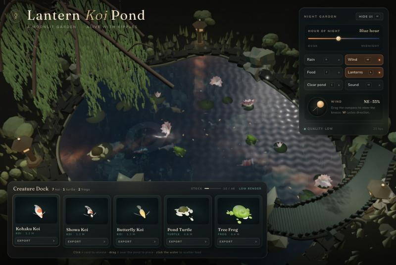
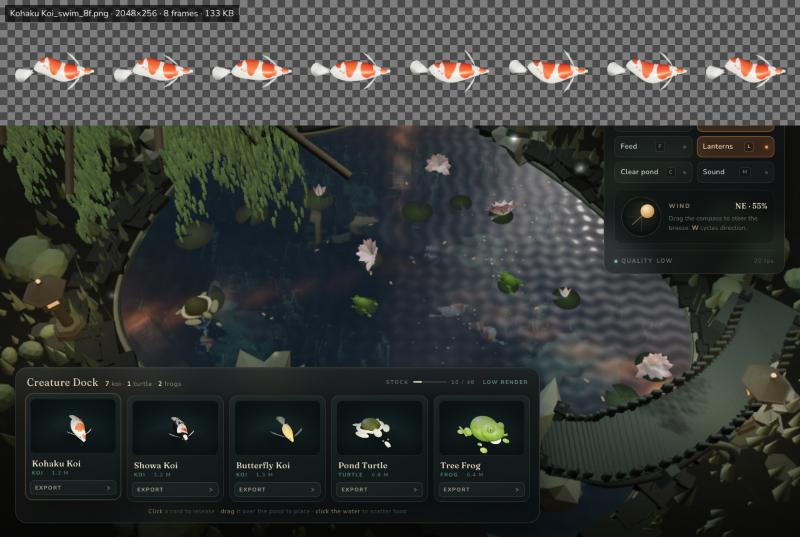
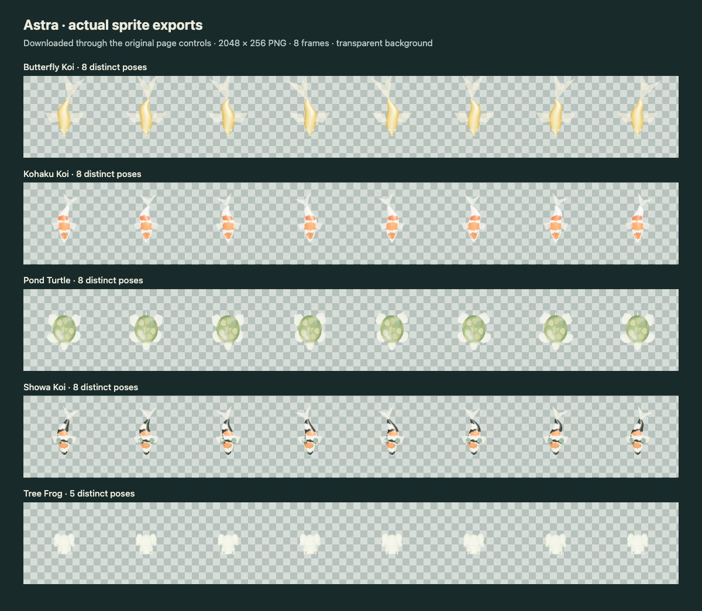
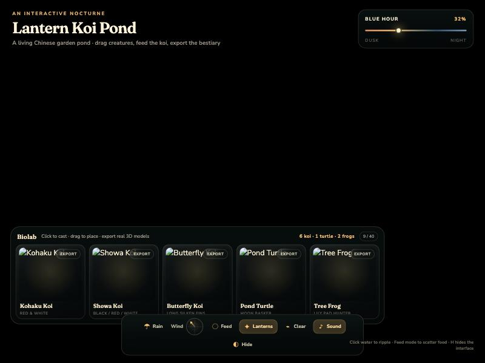
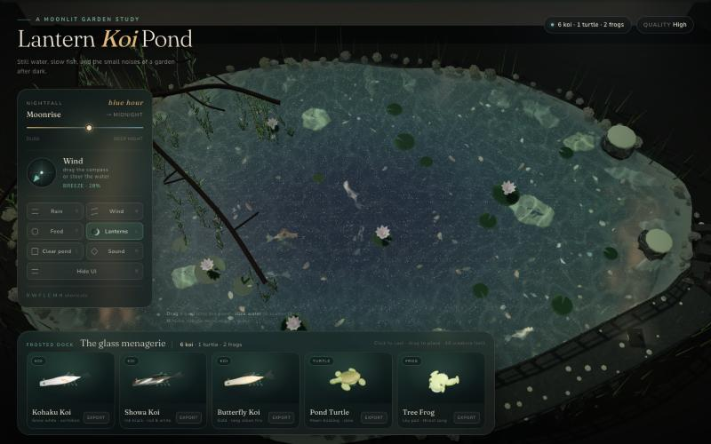
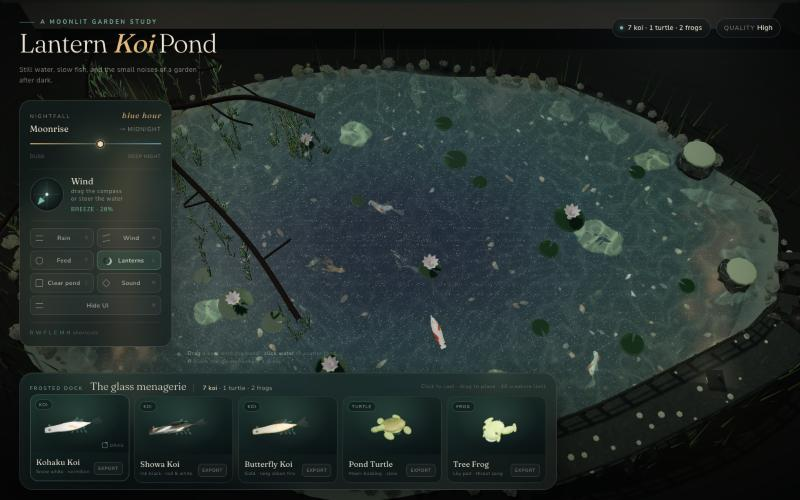
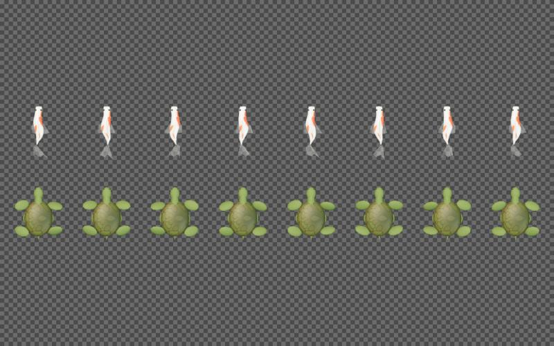

灯笼锦鲤池 · 四家同题对比
同一题目，四家效果并排看。2026-10-22 补齐 Astra。DeepSeek 主视图采用第三跑 /goal 版；运行方式不同，详见下方口径。订阅模型费用为 API 标准价折算。
四家开场画面 · 点图放大
园林细节丰富，制作时间最长打开原作品 ↗
低多边形卡通，功能完整打开原作品 ↗
第三跑 /goal，远景偏暗打开原作品 ↗
五种导出通过，夜景偏亮打开原作品 ↗
使用各次验收保存的开场截图，保留原始比例。DeepSeek 展示 10-21 第三跑 /goal 版；前两跑保留在下方。各家工具、运行方式和验收设备不同，详见测试口径。
| 模型 | 能否运行 | 文件 | 输出 token（含思考） | 标准价 | 用时 | .glb 导出 | 精灵图导出 |
|---|---|---|---|---|---|---|---|
| Claude Opus 5.5 · max | 能，零报错 | 180 KB | 88.8 万 | $28.29（≈¥201） | ≈3 小时 15 分（中途撞周额度，隔天续跑） | 能，1608 面，带贴图 | 能，2048×256 透明 8 帧 |
| Kimi K3 | 能，零报错 | 82 KB | 5.6 万 | $1.34（≈¥9.5） | 23 分钟 | 能，带贴图 | 能，2048×256 透明 8 帧 |
| DeepSeek V4.1-Flash · 单次 API · max | 不能，黑屏 | 218 KB | 17.5 万（思考 11 万） | $0.105（人民币价 ¥0.70，闲时价） | 11.5 分钟 | — | — |
| DeepSeek V4.1-Flash · dsh agent（10-20 重跑） | 能，零报错 | 245 KB | 29.3 万 | ¥2.29（闲时价；高峰价 ¥4.57） | 39 分钟，191 步 | 能，锦鲤 678 面、乌龟 1631 面，带贴图 | 能，2048×256 透明 8 帧（帧间动作很小） |
| DeepSeek V4.1-Flash · dsh /goal 循环（10-21 第三跑） | 能，零报错 | 254 KB | 43.6 万 | ¥3.89（闲时价；高峰价 ¥7.77） | 净 45 分钟（墙上 64，扣 18 分钟等批准），262 步，1 轮/上限 5 | 能，锦鲤 1438 面、乌龟 3085 面、青蛙 2380 面，带贴图 | 能，2048×256 透明 8 帧 |
| GPT-6-Astra · xhigh · Codex agent | 能，投放 9→10；1 条 WebGL 警告 | 88,570 bytes | 39,688（含思考 7,722） | 约 $2.82（订阅，非实际扣费） | 18.42 分钟，6 次工具调用 | 5 种，1560–2504 面，带材质和贴图 | 5 张，2048×256 透明 8 帧，有动作变化 |
DeepSeek V4.1-Flash · dsh /goal 循环（10-21）
同样的任务文本包进 /goal，让它自检到满足为止。它自己开无头 Chrome 看控制台、验导出，再回去改画面。垂柳有叶子、石灯笼有造型和暖光、水面有波纹和月光碎影，荷花睡莲、石桥都在。验收：零报错，投鱼计数 6→7，五个 .glb 合法，五张精灵图 2048×256 八帧透明。短板：高角度俯视而非正俯视，远景偏暗，我的浏览器里 25 fps 自动降画质。


打开页面GPT-6-Astra · xhigh
GPT-6-Astra · xhigh · Codex agent；一次完成生成，18.42 分钟、6 次工具调用。输出 39,688 token（含 7,722 思考 token）。
点卡投放计数 9→10。五种 GLB 均带材质和贴图，1560–2504 个三角面；五张精灵图均为 2048×256、透明、8 帧，均有动作变化。界面整齐，默认水面偏浅青灰，夜景氛围不足。保留 1 条 WebGL 反馈环警告。

打开原作品 ↗DeepSeek V4.1-Flash · 单次 API
写了最多的代码，却在建垂柳时用了一个从没声明过的变量 waterShadowLayer，启动就崩，只剩界面壳子。最便宜，但一次过不了。

打开页面DeepSeek V4.1-Flash · dsh agent（10-20）
用 dsh 的 agent 模式重跑，任务原文和 Kimi 一字不差。这次能跑，投放、计数、导出都正常，界面设计是四家里最讲究的。短板在画面：整体偏灰，石灯笼像白色圆柱，垂柳像光秃枝条，加载约 20 秒，精灵图帧间动作很小。



打开页面口径说明：Kimi 是 agent 模式（自己能读写文件、跑语法检查），DeepSeek 是单次 API 调用（无工具、不能自查），Opus 是 Claude Code 子会话（有工具，只用了语法检查，没开浏览器）。三家都不知道别家的结果。10-20 补跑：DeepSeek 改用 dsh 0.2.1-rc.2 的 agent 模式（headless），任务原文与 Kimi 相同，口径和 Kimi、Opus 一致；按实际 token 闲时价 ¥2.29。Kimi、Opus 走订阅不额外扣钱，金额是按 token 折算的标准价；DeepSeek 走 API 按量计费，按本次 token 人民币标准价是 ¥0.70。10-21 第三跑：dsh web 界面 /goal 循环，最多 5 轮，1 轮自判完成；token 从 dsh 会话日志算，闲时价 ¥3.89；两次沙箱提权（开无头 Chrome 自检）由 Claude 点允许，等待的 18 分钟不计入用时。
Astra 口径：一次完成生成，生成后未改源码；18.42 分钟为正式生成用时，不含先前兼容性预检与后续验收。初次 CDN 连接失败，普通刷新后加载成功。Astra 使用现有订阅；约 $2.82 是 API 标准价折算（token $2.80766＋1 次搜索 $0.01），非实际扣费。 官方价格。任务原文见 PROMPT.txt（四家完全相同）。截图保留各自原始比例与验收设备，未统一视角或修图。